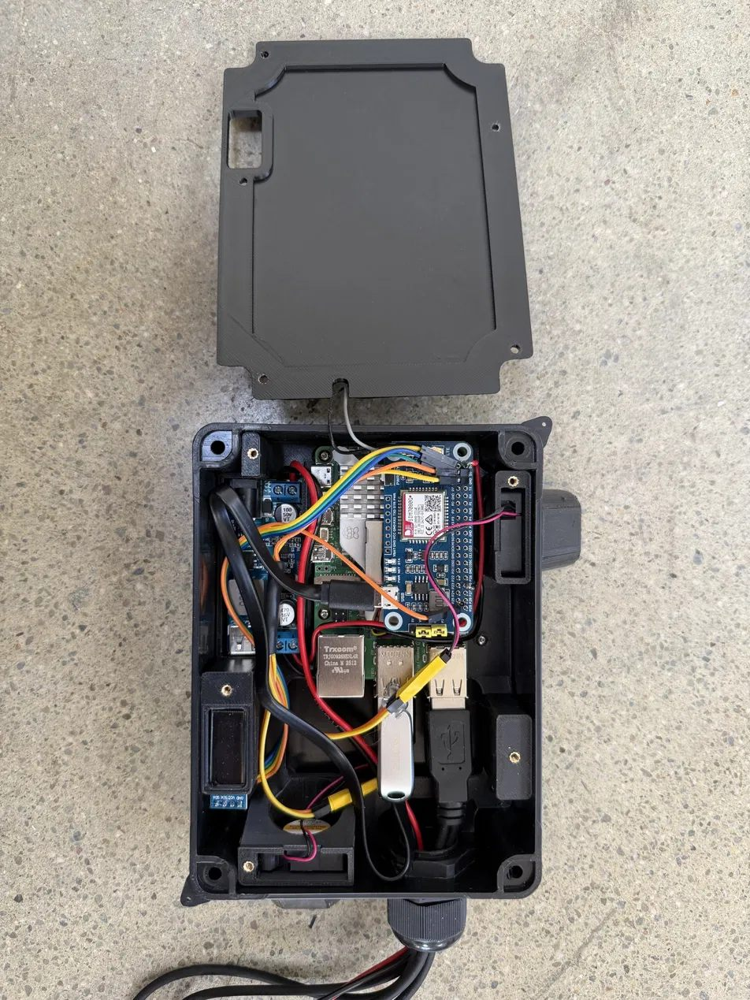

Mechanical Engineering · Vanderbilt University
Charlie Borchers
I design, build, and field-test hardware.
Mechanical engineering student (minors in CS & Math) working across sensor hardware for autonomous heavy machinery, magnetic soft robots for medical procedures, and assistive devices.
- 100+
- data nodes built from my design
- 20+
- worksites running my hardware
- 12
- projects, CAD to field
- 4.00
- GPA at Vanderbilt
- Emailcharles.a.borchers@vanderbilt.edu
- Websitecharlieb4.github.io
- LinkedInlinkedin.com/in/charles-borchers


